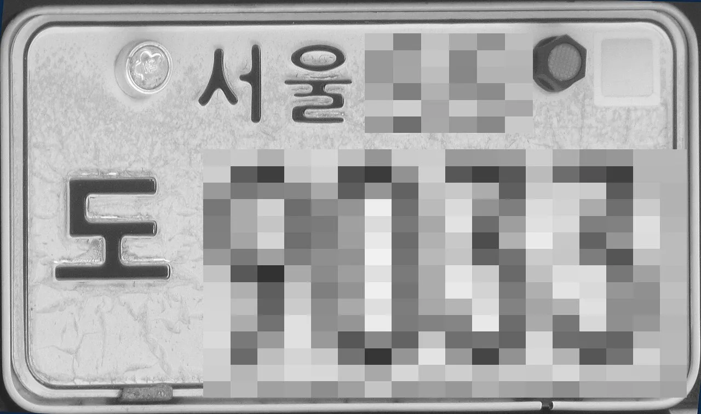
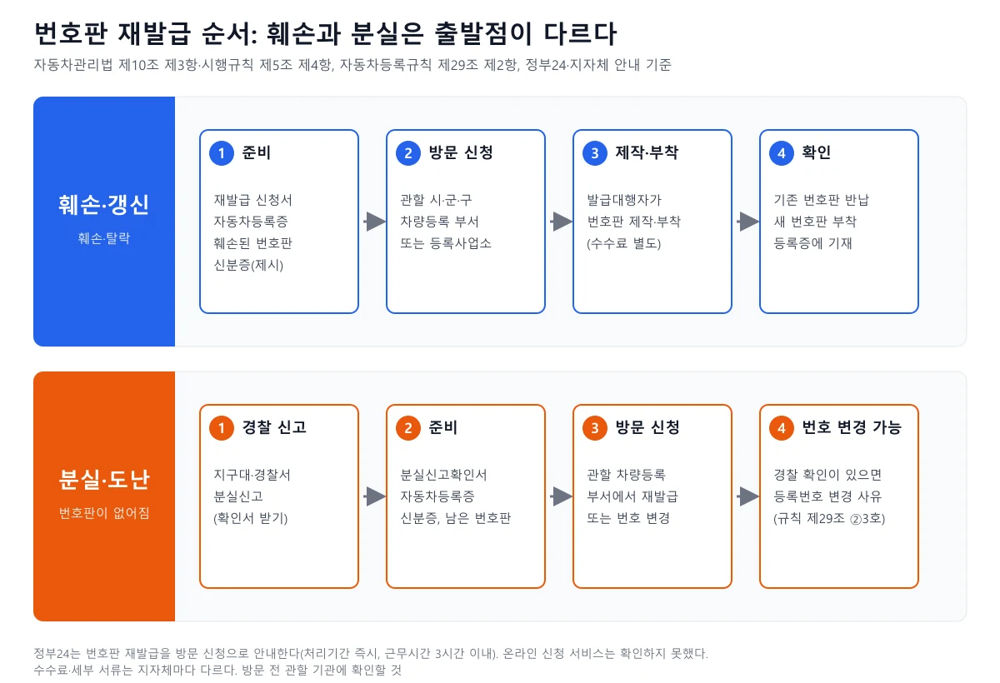
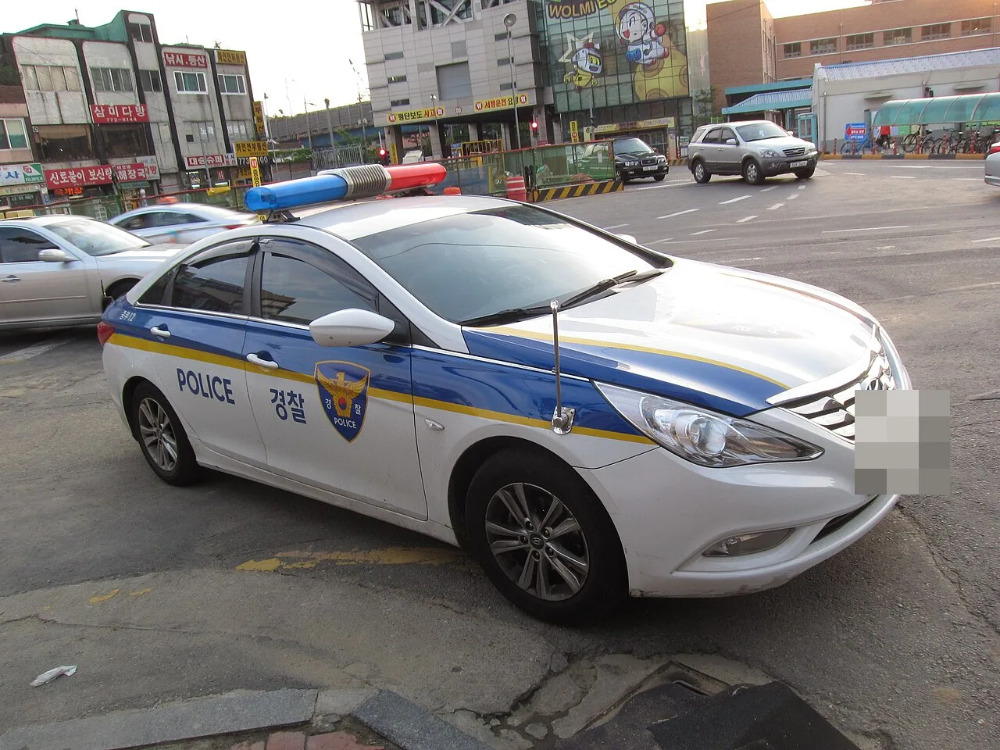
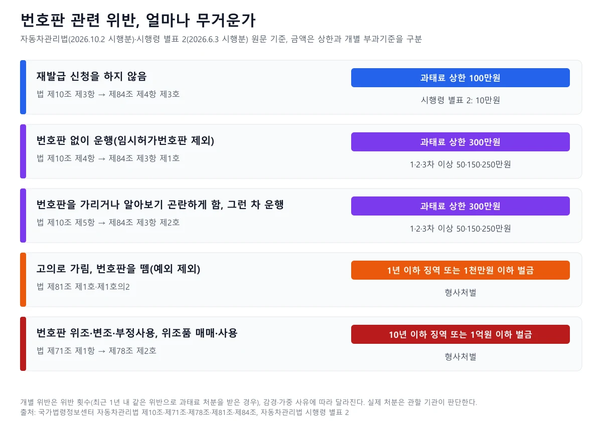
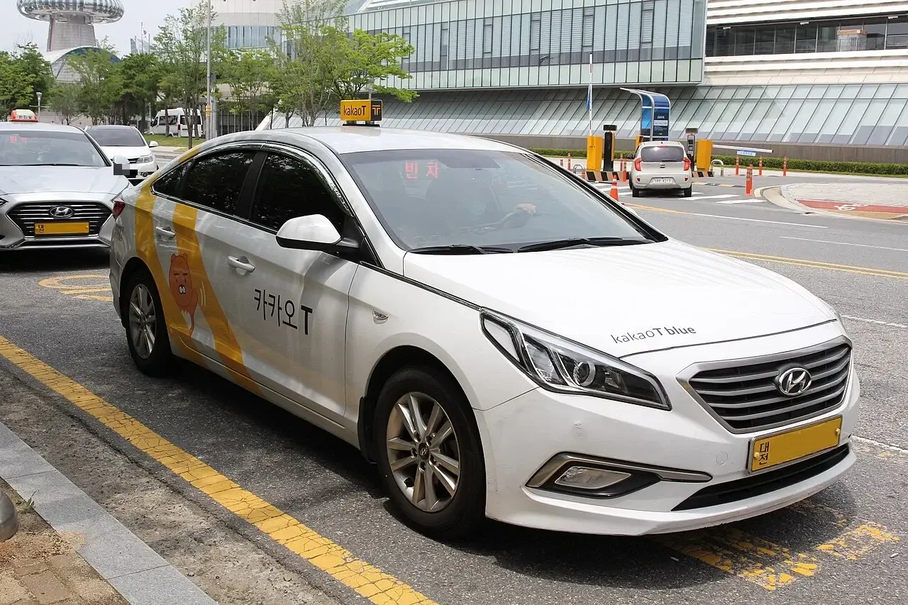
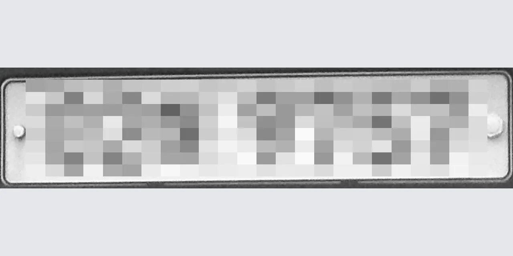

▲ 전기차용 번호판(번호는 카프리즘이 모자이크 처리). 번호판이 떨어지거나 알아보기 어렵게 되면 법 제10조 제3항에 따라 재신청해야 한다 ⓒ Jhcbs1019, Wikimedia Commons (CC BY-SA 4.0), 모자이크 가공
"번호판이 덜렁거리다 떨어졌는데 일단 타도 될까?" 주차장에서 번호판이 떨어져 있는 것을 발견하거나, 세차장에서 갈라진 번호판 도막을 본 적이 있다면 한 번쯤 해 보는 질문이다. 이 글은 2026년 10월 8일 국가법령정보센터 Open API로 자동차관리법·시행령·시행규칙·자동차등록규칙의 현행 원문을 직접 내려받아 조문 번호와 내용을 대조했고, 정부24와 부산시·수원시·동대문구·마포구·강남구 안내 페이지로 절차를 확인했다. 확인하지 못한 항목은 "확인하지 못했다"로 적었다. 블로그·커뮤니티 정보는 쓰지 않았고, 처분 결과는 관할 기관의 판단에 따라 달라지므로 단정하지 않는다.
1. 먼저 상황을 나누자 — 훼손·탈락·분실·도난은 길이 다르다
법이 정한 의무는 '번호판이 떨어지거나 알아보기 어렵게 되면 다시 신청하라'이고, 서식에는 분실 칸이 따로 없다. 시행규칙 별지 제1호서식(등록번호판 재발급 신청서)의 재발급사유란에는 '훼손'과 '갱신' 두 칸만 있다. 분실·도난 때 어떤 서류를 내는지는 법령 서식이 아니라 지자체 안내에 적혀 있다. 아래 표는 상황별로 근거와 해야 할 일을 정리한 것이다.
| 상황 | 근거 | 해야 할 일 |
|---|---|---|
| 번호판이 떨어짐·알아보기 어렵게 됨(훼손) | 법 제10조 제3항, 시행규칙 제5조 제4항 | 재발급 신청서·자동차등록증·훼손된 번호판으로 시·도지사(또는 발급대행자)에 재신청 |
| 낡아서 새로 받고 싶음(갱신) | 별지 제1호서식 재발급사유 '훼손·갱신' | 같은 서식으로 신청(갱신 때도 서식상 같은 칸) |
| 분실·도난 | 수원시·동대문구 안내(분실신고확인서), 등록규칙 제29조 제2항 제3호 | 경찰서·지구대 분실신고 후 차량등록 부서 방문, 경우에 따라 등록번호 변경 |
| 폐차·수출 등 말소 때 번호판이 없음 | 법 제13조 제1항·제5항, 등록규칙 제39조 | 직권 말소 통지를 받은 경우 천재지변·교통사고·도난 등으로 등록증·번호판이 멸실됐다면 반납 면제(자진 말소 때의 면제 규정은 확인하지 못함) |

▲ 도장이 갈라진 2003년식 구형 서울 번호판. 알아보기 어렵게 된 번호판은 법 제10조 제3항에 따라 재발급을 신청해야 한다(번호는 카프리즘이 모자이크 처리) ⓒ Jhcbs1019, Wikimedia Commons (CC BY-SA 4.0), 모자이크 가공
번호판이 갈라지거나 벗겨져 번호를 읽기 어려워졌다면 '알아보기 어렵게 된 경우'에 해당할 수 있다. 어느 정도가 해당하는지를 정한 기준은 이번 원문 확인에서 찾지 못했다. 판단은 관할 기관과 단속 현장에 달려 있으니, 의심스러우면 먼저 재발급을 신청하는 쪽이 안전하다. 법 조문은 국가법령정보센터에서 볼 수 있다. 자동차관리법 바로가기
2. 재발급 절차 — 어디서, 무엇을 들고 가나
신청처는 시·도지사(또는 지정된 번호판발급대행자)이고, 정부24는 시·군·구 방문 신청으로 안내한다. 시행규칙 제5조 제4항은 별지 제1호서식 신청서에 헐어서 못쓰게 된 등록번호판(그 사유로 신청하는 경우에 한정)과 자동차등록증을 첨부해 제출하라고 정한다. 제5조 제6항은 개인은 주민등록표 초본(주민등록증·운전면허증 제시로 갈음 가능), 법인은 법인 등기사항증명서나 사업자등록증명을 담당자가 행정정보 공동이용으로 확인해야 한다고 정한다. 자동차를 제시해야 한다는 조항은 제5조 제1항(최초 부착 신청)에 있고, 제5항이 제2항을 재발급에도 준용해 같은 동일성 확인을 거친다.

▲ 훼손은 신청서·등록증·훼손된 번호판을 들고 가는 길, 분실은 경찰 신고가 먼저인 길이다. 정부24는 번호판 재발급을 방문 신청으로 안내한다 ⓒ 카프리즘 제작 도표 (자동차관리법·시행규칙·자동차등록규칙, 정부24·지자체 안내 기준)
| 구분 | 훼손 | 분실 |
|---|---|---|
| 개인 본인 | 재발급 신청서, 자동차등록증 원본, 신분증, 훼손된 번호판 | 분실신고확인서(경찰서·지구대 발급), 자동차등록증, 신분증(주민등록증·운전면허증). 동대문구는 남은 번호판도 안내 |
| 개인 대리인 | 위 서류 + 대리인 신분증, 위임장(차주 날인), 소유자 신분증 사본 | 대리인 신분증, 위임자 인감증명서 또는 본인서명사실확인서(소유자 신분증 사본이 없는 경우), 위임장(도장 날인) |
| 법인 | 신분증, 법인 등기부등본·사업자등록증·법인인감증명서 중 하나. 대리인은 위임장(법인 인감 날인)과 3개월 이내 법인인감증명서 원본 | 법인인감증명서(3개월 이내 발급), 위임장(법인인감 날인) |
소요 기간은 법령에 '즉시'로 적혀 있고(별지 제1호서식), 정부24도 근무시간 내 즉시(3시간 이내)로 안내한다. 정부24는 이 민원의 구비서류로 '헐어서 못쓰게 된 등록번호판(그런 사유로 신청하는 경우에 한함)'과 자동차등록증을 적었고, 수수료는 시행규칙 제12조에 따라 발급대행자가 정하는 금액이라고 안내한다. 지자체 안내는 이보다 구체적이다. 부산시는 본청(명지)에서는 당일 교부가 가능하지만 1시간 이상 걸리고, 번호판 제작에 약 40분이 걸리니 낮 12시 전에 교체하려면 11시까지 신청하라고 적었다. 금련산 현장민원센터는 2~3일이며 부전·구포·동부산 센터는 번호판을 발급하지 않는다. 마포구는 번호 변경 없이 번호판만 재발급할 때 구청 접수 후 번호판 제작소를 방문해 교체하며 제작에 1시간가량, 16시 이전 방문하면 당일 교체가 가능하다고 안내한다. 강남구는 처리기간을 '즉시'로 적었다. 지자체마다 다르므로 방문 전 확인이 필요하다. 정부24 페이지의 신청방법란에는 '방문'만 적혀 있어 온라인 신청 서비스는 확인하지 못했다. 정부24 해당 민원은 아래에서 볼 수 있다. 정부24 번호판 재발급 바로가기 지자체 안내는 부산시 부산시 안내 바로가기 수원시 수원시 안내 바로가기 동대문구 동대문구 안내 바로가기 에서 볼 수 있다.
자동차등록증도 함께 없다면 번호판 신청 전에 등록증부터 다시 받아야 한다. 이 절차는 정말 5분이면 될까 자동차등록증 재발급, 직접 순서대로 짚어봤다에서 다뤘다.
3. 수수료 — 법은 '발급대행자가 정한다'고만 적었다
번호판 재발급 수수료의 법정 금액은 시행규칙에 숫자로 적혀 있지 않다. 시행규칙 제12조 제1항은 번호판을 발급받으려는 자가 "등록번호판발급대행자가 정하는 등록번호판발급 수수료(번호판의 가격 및 부착비용을 포함)"를 납부한다고 정하고, 제2항은 발급대행자가 소비자나 소비자단체의 요구가 있으면 산출 근거를 명시하도록 정한다. 재발급 신청서 수수료란도 "시행규칙 제12조에 따라 등록번호판발급대행자가 정하는 금액"이라고만 적었다. 그래서 한 줄 금액으로 말할 수 없고, 아래처럼 지자체 안내가 서로 다르다.
| 출처 | 안내 내용 | 비고 |
|---|---|---|
| 시행규칙 제12조 | 발급대행자가 정하는 수수료(번호판 가격·부착비용 포함) | 금액은 법령에 없음 |
| 부산시 차량등록사업소 | 재발급: 증지 및 등록세 없음, 번호판(보조판) 제작비 및 탈·부착비 별도. 같은 페이지의 재교부 항목은 번호판 9,900원(보조대 별도)으로 표기 | 번호 변경등록은 증지 1,300원·등록세 15,000원 + 번호판 비용. 구입비용 페이지는 필름식 20,500원 등으로 달라 현행 금액은 확인하지 못함 |
| 동대문구청(변경등록 안내, 2025.10.28 수정) | 수수료 1,300원, 등록세 15,000원(법인 상호·번호 변경, 등록번호 변경 등 해당 시), 번호판 대금 소형 6,800원·대형 8,200원 | 변경등록 안내 안에 한꺼번에 적혀 재발급에만 해당하는지 구분되지 않음 |
| 마포구청 | 번호 변경 때 증지 1,300원·등록면허세 15,000원, 번호판 대금 일반형 6,800원·대형 8,200원·필름형 21,500원. 번호만 그대로 재발급은 제작소에서 교체(제작 1시간가량, 16시 이전 방문 시 당일) | 번호판 대금이 현재 가격인지는 확인하지 못함 |
| 강남구청(2025.6.9) | 처리기간 즉시, 등록세 15,000원(번호 변경 시), 번호판 재교부는 제작소 방문 후 3,000~12,000원 정도 납부 | 번호판 종류별 금액은 적지 않음 |
| 자동차등록규칙 별지 제11호서식 | 변경등록 신청 수수료 1,300원(주민등록 전입신고로 갈음하는 사용 본거지 변경 제외) | 등록번호가 바뀌는 변경등록의 서식(원문 확인) |
| 정부24 | 수수료 금액을 적지 않고 시행규칙에 따른다고 안내 | 구체 금액은 지자체에 문의 |
부산시와 동대문구가 서로 다른 금액을 적은 이유를 따져 봤다. 증지 1,300원과 등록세 15,000원은 부산시 안내에서는 '번호 변경등록'의 수수료이고 번호판 재교부는 증지·등록세가 없다고 따로 적혀 있다. 마포구도 번호 변경 때 증지 1,300원과 등록면허세 15,000원을 적었고, 번호만 그대로 둔 재발급은 번호판 제작소에서 교체한다고 안내한다. 동대문구 페이지는 변경등록 안내 안에서 수수료 1,300원, 등록세 15,000원(번호 변경 등 해당 시), 번호판 대금을 한꺼번에 적어 번호판만 재발급할 때도 1,300원이 드는지 구분하지 못한다. 한편 부산시는 같은 페이지의 다른 항목에서 재교부 번호판 값을 9,900원으로, 별도의 '번호판 및 보조대 구입비용' 페이지(2025.12.31 갱신)에서는 1조(2매) 부가세 포함 중형 필름식 20,500원, 전기차용 23,850원, 대형 10,100원, 페인트식 8,650원, 탈부착·재봉인 5,000원(선택)으로 적어 서로 다르다. 어느 쪽이 현재 적용 금액인지는 확인하지 못했으니 방문 전 전화 확인이 안전하다. 부산시는 2025년 2월 21일부터 봉인제도가 폐지돼 봉인을 달지 않아도 된다고 적었고, 현행 자동차관리법 원문에서도 번호판 봉인 규정은 검색되지 않았다.
4. 분실·도난이라면 — 경찰 신고, 번호 변경, 악용 대비
분실·도난은 경찰 신고가 먼저이고, 등록번호가 바뀔 수도 있다. 수원시와 동대문구 안내는 개인 본인이 가면 분실신고확인서(경찰서·지구대 발급), 자동차등록증, 신분증이 필요하다고 적었다. 자동차등록규칙 제29조 제2항 제3호는 "자동차 소유자를 범죄행위로부터 보호할 필요가 있는 경우 또는 자동차 등록번호판을 분실하거나 도난당한 경우로서 경찰관서의 장의 확인이 있는 경우"를 등록번호 변경이 가능한 사유로 든다. 부산시도 번호 변경등록 사유에 "번호판 분실·도난(경찰 확인)"을 열거하고, 분실(번호판 식별 불가 포함)·도난 때 경찰서장 직인이 찍히고 자동차 번호와 번호판 분실 수량이 적힌 신고확인서를 내라고 안내한다. 강남구는 남은 번호판과 경찰서에서 발급한 분실신고접수증을 가져오라고 적었다. 서류 이름은 지자체마다 조금씩 다르다. 번호를 꼭 바꿔야 하는 것은 아니며 신청 단계에서 선택하는 것으로 보이지만, 이 부분의 지자체별 처리는 확인하지 못했다.

▲ 경찰 순찰차(자료사진). 번호판 분실·도난은 경찰서·지구대에서 분실신고확인서를 받는 것이 첫 단계다(차량 번호판 일부는 카프리즘이 모자이크 처리) ⓒ Waka77, Wikimedia Commons (CC0), 모자이크 가공
악용 가능성은 법에서 어떻게 막고 있을까. 자동차관리법 제71조 제1항은 누구든지 등록번호판을 "위조·변조 또는 부정사용하거나 위조 또는 변조한 것을 매매, 매매 알선, 수수 또는 사용하여서는 아니 된다"고 정하고, 제78조 제2호가 이를 위반한 자에게 10년 이하의 징역 또는 1억원 이하의 벌금을 정한다. 도난 번호판이 범죄에 쓰였을 때 소유자에게 과태료 등이 부과되는지, 분실신고가 소명에 어떤 효력이 있는지에 대한 법적 판단은 이번에 확인하지 못했다. 다만 분실신고확인서는 재발급과 번호 변경에 필요한 서류이므로 받아서 보관해 두는 것이 안전하다. 번호가 바뀌면 보험사·주차장 사전등록·하이패스 등 번호가 등록된 곳을 다시 확인하라는 것은 카프리즘의 일반적 권고이며 법령 근거는 아니다.
말소(폐차·수출 등) 때 번호판을 못 돌려주는 경우도 있다. 법 제13조 제1항은 말소등록 때 자동차등록증과 등록번호판을 반납하라고 정하고, 제82조 제2호는 정당한 사유 없이 반납하지 않은 자에게 100만원 이하의 벌금을 정한다. 법 제13조 제5항은 직권 말소 통지를 받은 소유자에게 부득이한 사유가 없으면 지체 없이 반납하라고 정하는데, 등록규칙 제39조는 그 부득이한 사유를 "천재지변·교통사고 또는 도난 등으로 자동차등록증 또는 번호판이 멸실된 경우"로 정한다.
5. 훼손됐는데 그냥 타면 — 과태료·벌칙 조항을 정확히
번호판 관련 처벌은 '재발급 안 함'과 '번호판 없이 운행'이 서로 다른 조항이고 금액도 다르다. 아래는 법 원문(시행 2026년 10월 2일)과 시행령 별표 2(시행 2026년 6월 3일)를 대조한 것이다.

▲ 번호판 관련 위반은 과태료 상한 100만원·300만원에서 징역 1년·10년까지 올라간다. 개별 과태료는 시행령 별표 2의 횟수별 기준이 따로 있다 ⓒ 카프리즘 제작 도표 (자동차관리법·시행령 별표 2 기준)
| 위반 | 근거 | 처벌 상한 | 시행령 별표 2 개별 기준 |
|---|---|---|---|
| 등록번호판 재부착 신청을 하지 않음 | 제10조 제3항 → 제84조 제4항 제3호 | 과태료 100만원 이하 | 10만원 |
| 번호판 없이 운행(임시운행허가번호판 제외) | 제10조 제4항 → 제84조 제3항 제1호 | 과태료 300만원 이하 | 1차 50만원, 2차 150만원, 3차 이상 250만원 |
| 번호판을 가리거나 알아보기 곤란하게 함, 그런 차 운행(고의 가림 제외) | 제10조 제5항 → 제84조 제3항 제2호 | 과태료 300만원 이하 | 1차 50만원, 2차 150만원, 3차 이상 250만원 |
| 직접 부착 허용을 받고 번호판을 붙이지 않음 | 제10조 제1항 단서 → 제84조 제4항 제2호 | 과태료 100만원 이하 | 50만원 |
| 고의로 번호판을 가리거나 알아보기 곤란하게 함 | 제10조 제5항 → 제81조 제1호의2 | 1년 이하 징역 또는 1천만원 이하 벌금 | 형사처벌 |
| 번호판을 허가 없이 뗌(예외 사유 제외) | 제10조 제2항 → 제81조 제1호 | 1년 이하 징역 또는 1천만원 이하 벌금 | 형사처벌 |
| 영치 업무를 방해할 목적으로 부착 이외의 방법으로 번호판을 붙이거나 그런 차 운행 | 제10조 제9항 → 제82조 제1호의2 | 100만원 이하 벌금 | 형사처벌 |
| 번호판 위조·변조·부정사용, 위조품 매매·사용 | 제71조 제1항 → 제78조 제2호 | 10년 이하 징역 또는 1억원 이하 벌금 | 형사처벌 |
숫자를 읽는 법을 정리하면 이렇다. 법은 상한을 정하고, 실제 부과 금액은 시행령 별표 2가 정한다. 별표 2의 일반기준은 최근 1년 안에 같은 위반으로 과태료 처분을 받은 경우를 가중 횟수로 세고, 부과권자가 개별 기준 금액의 2분의 1 범위에서 줄이거나 늘릴 수 있다고 정한다(늘릴 때는 법 상한 이내). 번호판이 자연스럽게 마모돼 알아보기 어려워진 경우를 제10조 제3항(재신청 의무)으로 볼지 제5항(알아보기 곤란하게 하거나 그런 차 운행)으로 볼지는 원문 확인만으로는 가르지 못했다. 이 글은 사안별로 달라질 수 있다고만 적는다.

▲ 번호판 숫자가 지워진 택시 사진(카카오 T 택시, 대전). 번호판을 붙이지 않고 운행하면 법 제10조 제4항 위반으로 과태료 대상이다(배경 차량 번호판은 카프리즘이 모자이크 처리) ⓒ Rickinasia, Wikimedia Commons (CC BY-SA 4.0)
6. 임시번호판·영치와 헷갈리지 말자
번호판을 새로 받는 상황은 재발급 외에도 임시운행허가, 영치, 말소 반납이 있고 근거 조문이 모두 다르다. 아래 표로 구분한다.
| 상황 | 근거 | 핵심 | 더 보기 |
|---|---|---|---|
| 재발급(훼손·분실·갱신) | 법 제10조 제3항 | 내 번호판이 없거나 알아보기 어려울 때 다시 신청 | 이 글 |
| 임시운행허가번호판 | 법 제27조, 제84조 제3항 제6·7호 | 등록 전 일시 운행. 허가 목적 외 운행·임시번호판 미부착 운행은 별표 2 기준 1·2·3차 이상 50·150·250만원 | 번호판 없는 새 차, 그냥 몰고 가도 될까? 임시운행허가 |
| 번호판 영치 | 법 제24조의2 제2항·제3항 등 | 운행정지 명령을 한 경우 필요하면 번호판을 영치하고 소유자에게 통보. 과태료 체납 영치는 별도 절차 | 고지서는 못 받았는데 번호판을 떼 간다고요? |
| 말소 때 번호판 반납 | 법 제13조 제1항, 제82조 제2호 | 정당한 사유 없이 반납하지 않으면 100만원 이하 벌금. 직권 말소 통지 후 도난 등 멸실은 반납 면제(등록규칙 제39조) | 폐차·수출 절차 |

▲ 시행규칙 제6조는 번호판의 규격·재질·색상을 자동차의 종류와 용도별로 구분하라고 정한다. 위키미디어에 대여용 승용차 번호판으로 올라온 사진이며 번호는 카프리즘이 모자이크 처리했다 ⓒ P.Cps1120a, Wikimedia Commons (CC BY-SA 3.0), 모자이크 가공
새 번호판을 받을 때 어떤 번호판이 나오는지는 번호판 제작 기준 변경과 관련이 있다. 이는 야간에 잘 안 보인다더니… 2026년 11월, 번호판이 6배 밝아집니다에서 다뤘으므로 이 글에서는 일정과 수치를 따로 확인하지 않았다.
7. 흔한 오해 6가지
| 오해 | 확인한 사실 |
|---|---|
| "번호판이 없어도 잠깐은 괜찮다" | 제10조 제4항은 부착하지 않은 자동차를 운행하지 못한다고 정한다(임시운행허가번호판 부착 예외). 위반하면 과태료 상한 300만원 |
| "번호판 재발급은 정부24에서 클릭 몇 번이면 된다" | 정부24는 번호판 재발급을 방문 신청으로 안내한다. 자동차등록증 재발급은 온라인이 가능하지만 번호판은 온라인 신청을 확인하지 못했다 |
| "재발급 수수료는 전국 같다" | 법은 발급대행자가 정한다고 적었고 부산시·동대문구·마포구·강남구 안내의 금액과 항목이 서로 다르다 |
| "분실신고는 안 해도 된다" | 수원시·동대문구 안내는 분실 재발급 서류로 경찰서·지구대 발급 분실신고확인서를 요구한다 |
| "분실하면 번호가 자동으로 바뀐다" | 등록규칙 제29조 제2항 제3호는 경찰 확인이 있을 때 등록번호 변경 사유로 열거할 뿐이며, 자동 변경이라고 적지 않았다 |
| "번호판을 가리는 건 과태료뿐이다" | 고의로 가리거나 알아보기 곤란하게 하면 제81조 제1호의2로 1년 이하 징역 또는 1천만원 이하 벌금이다 |
8. 출발 전 체크리스트
✅ 번호판이 이상하다면 이 순서로
· 1단계, 상태 확인: 떨어졌는지, 갈라져 번호가 안 읽히는지, 아예 없어졌는지 사진으로 남긴다
· 2단계, 분실·도난이면 경찰 신고: 지구대·경찰서에서 분실신고확인서를 받는다
· 3단계, 서류 준비: 자동차등록증(없으면 먼저 재발급), 신분증, 훼손된 번호판(훼손이면 필수), 대리인이면 위임장
· 4단계, 방문 전 확인: 관할 시·군·구 차량등록 부서에 수수료·번호판 대금·발급 소요(당일 가능 여부)를 전화로 확인한다
· 5단계, 방문 신청: 시·군·구 차량등록 부서(또는 등록사업소)에서 신청. 정부24는 방문 신청, 처리기간 즉시(3시간 이내)로 안내한다
· 6단계, 번호 변경 여부: 분실·도난이면 경찰 확인에 따라 등록번호 변경이 가능한지 창구에서 묻는다
· 7단계, 재등록 확인: 보험·주차장 사전등록·하이패스 등 번호를 쓰는 곳을 다시 점검한다(카프리즘 권고)
9. 요약
번호판이 떨어지거나 알아보기 어려워지면 자동차관리법 제10조 제3항에 따라 시·도지사에게 재신청해야 하고, 정부24는 방문 신청(처리기간 즉시, 3시간 이내)으로 안내한다. 서류는 재발급 신청서·자동차등록증·훼손된 번호판이고, 분실이면 경찰서·지구대 분실신고확인서가 필요하다고 지자체가 안내한다. 수수료는 시행규칙 제12조에 따라 발급대행자가 정하므로 지자체마다 다르다. 부산시는 재발급에 증지·등록세가 없다고 적었고, 증지 1,300원·등록세 15,000원은 부산시·마포구 안내에서 번호 변경등록 비용이다. 번호판 값은 강남구 3,000~12,000원, 마포구 일반형 6,800원 등으로 안내가 갈린다.
처벌은 조항별로 다르다. 재신청 불이행 과태료 10만원(상한 100만원), 번호판 없이 운행 1·2·3차 이상 50·150·250만원(상한 300만원), 고의 가림·번호판 뗌 1년 이하 징역 또는 1천만원 이하 벌금, 위조·변조·부정사용 10년 이하 징역 또는 1억원 이하 벌금이다. 온라인 번호판 재발급 서비스, 분실 번호판 악용 시 소유자 책임, 번호판이 어느 정도 훼손되면 위반인지에 대한 기준, 재발급 수수료의 전국 단일 금액은 확인하지 못했다.